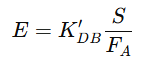
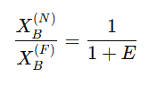
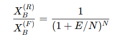
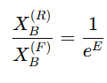
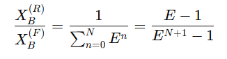
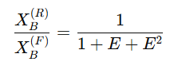

single-section extraction cascade
같은 용매량, 같은 단수라면 cocurrent < crosscurrent < countercurrent 순으로 잘 뽑힌다. 이를 확인하는 파트이다.
먼저 상황부터 잡으면, feed가 공급되며 A와 B로 구성되어있다. A는 안녹는 액체이고 B는 우리가 뽑으려는 액체이다. 이를 추출하려 용매 C를 넣는다. 이때 분배계수 KDB는 YB/XB로 구할 수 있으며 이때 XB는 잔류물질에서 B질량/A질량, YB는 추출물에서 B질량/C질량이다.
이때 추출인자 E를 다음처럼 정의한다.

KDB는 B가 용매쪽을 얼마나 더 좋아하는지 (B/C / B/A)이고 S는 용매 유량이며 FA는 피드에서 A유량이다. A가 많을 수록 추출인자는 줄고, 반면에 용매가 많거나 분배계수가 높으면 E는 높아진다. 이는 추출이 얼마나 잘되는지를 보여주는 숫자이다.
이제 각각 캐스케이드 방식 별로 N단에서 XBR/XBF를 비교하면서 유리함을 비교하려고 한다. 이는 n단 후에 라피네이트에 남은 B양을 처음 피드에 있던 B의 농도비로 나눈것으로, 처음에 비해 B가 얼마나 남았나를 보는 값이다.
이게 1이면 하나도 안뽑힌거고 0.1이면 90% 추출된 것이며 0에 가까울 수록 좋은 것이다.
1)cocurrent :1단이든 무한단이든 효과 차이 없음

2)crosscurrent: 단수가 늘 수록 추출이 잘됨.

무한단으로 가게 되면

3) countercurrent

2단일때 예시

따라서 카운터 커런트 방식이 가장 효과적임을 알 수 있다. 이때, 완전한 추출을 원한다면 E>1이어야 한다. 그렇지 않다면 완전 추출은 불가ㅡㅇ하다..